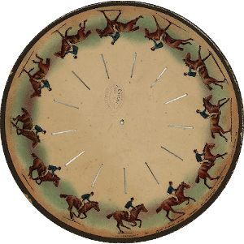
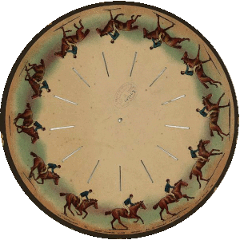

2021-12-07 23:52
Phenakistiscope: An early animation toy
Back on the 1830's, scientists were intrigued by the optical illusions created by rotating wheels. Imagine ingenious cardboard devices that, when spun in front of a mirror, created the illusion of movement. These are among the grand-parents of cinema and animated GIFs!
Soon, paper toys were sold all around the globe with gorgeous, short animations. The user would look into a mirror through slits in a rotating cardboard disk. If the disk were held still, viewing the image reflection through a single slit would freeze it at a particular angle; viewing it through each slit in sequence would then create the illusion of movement. The beautiful images would burst into life.
It is easy nowadays to find beautiful disks for this kind of wonderful animations. You can indeed print them, glue them on cardboard, cut the slits open and spin them in front of a mirror. Or, you can animate them into a GIF file. Even better, you can animate them with a small motor and stroboscopic lights!
But let's not run ahead ourselves, and let's talk about the disks first.
Beautiful disks (and how they work)
Consider this disk from 1893. It shows a running horse. Let's make an experiment in our minds: Imagine that your eyes are closed and that you open them briefly and see the disk. Now, using your imagination, rotate the disk by 1/12th of a turn and open your eyes for another brief moment. You would find that the next frame of the running horse has replaced the original. The horse is still at the same place, but its pose changed slightly. Repeat many times. Now you can see the animation with the eyes of your imagination! (but you can still cheat and see the image below).

So, there are 12 frames drawn in the disk, spaced at equal angles of 30°. If the disk rotates by 30° each time we get a glimpse, we will effectively see the next frame in place of the current one. Do this many times and you get an animation.
However, note that the disk has 13 slits! They are spaced not every 30°, but every 27,7°! What do you think will happen?
With your mind, turn the disk by just 1/13th of a turn. Open your eyes, take a brief look, and close them again. Repeat. It is the slits that will remain stationary this time! But what about the horses? Where is the next frame? Well, because we just turned 27,7° instead of 30°, the next horse frame didn't arrive to the same position of the previous frame. It is slightly off, and in this case, slightly advanced. The horse is running faster! Using a number of frames that is different than the angle of rotation of the disk results in tangential movement. In cardboard disks like this, the angle of rotation is given by the separation between the slits. It equals 360° divided by the number of slits. The number of frames is the number of horses, in this case.
About this series
This is the first article about the phenakistiscope. In this short series, I describe some of the ideas used to animate the disks. At the end I will include a post about a circuit that animates the disks using LEDs and a servomotor.
The image used above can be found in the library of congress of the United States and it is in the public domain.